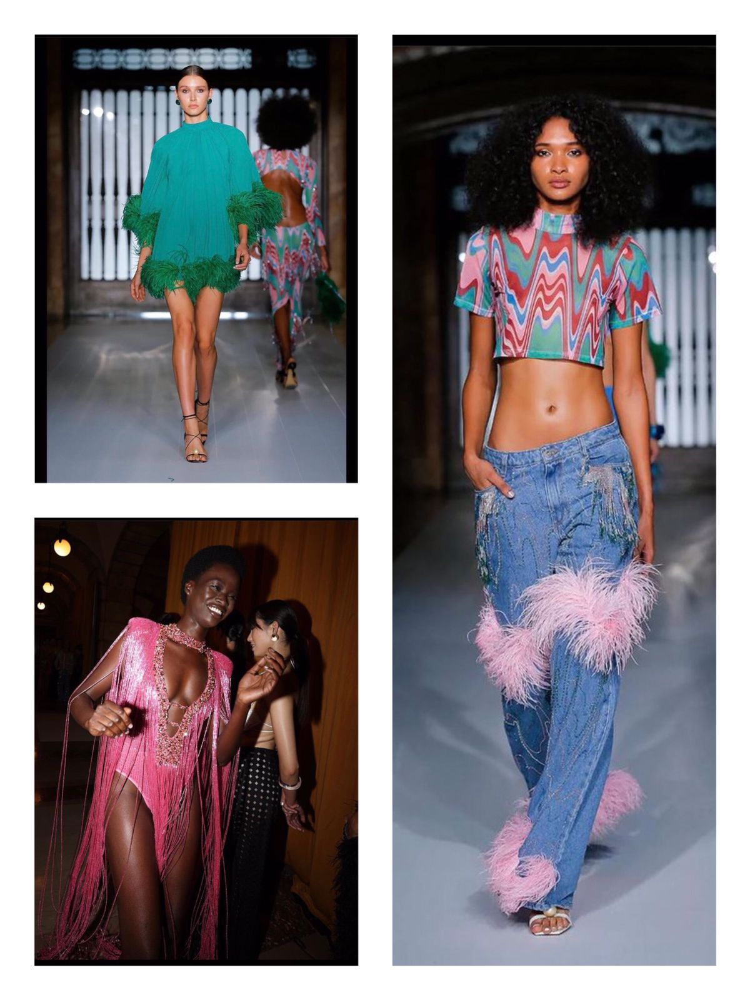

A PatBO é uma marca brasileira que está cada vez mais conquistando seu espaço internacional com o glamour de suas peças. Em 2012, dez anos depois da criação da marca Patricia Bonaldi, as ideias mais ousadas da estilista homônima começaram a ganhar forma, em peças que incorporam e fazem tendências. As coleções da PatBO são amplas e abrangentes, contam com roupas noturnas, jeans, casuais e de praia.